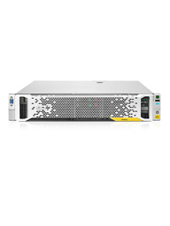

HPE StoreEasy 3000 Tech Specs:
- HPE ProLiant Gen 9 based
- Microsoft Windows Storage Server 2016 or 2012 R2
- File and block storage capable - CIFS/SMB, NFS, iSCSI, HTTP, FTP, and WebDAV
- Eight internal hard drives on the 2U Form Factor (2 dedicated for the OS)
- Two internal hard drives on the blade
- External = Designed for attach to Fibre Channel, SAS, or iSCSI arrays
- Certified arrays = HPE 3PAR, HPE StoreVirtual, HPE P9000/XP, HPE P6000/EVA, HPE P2000/MSA